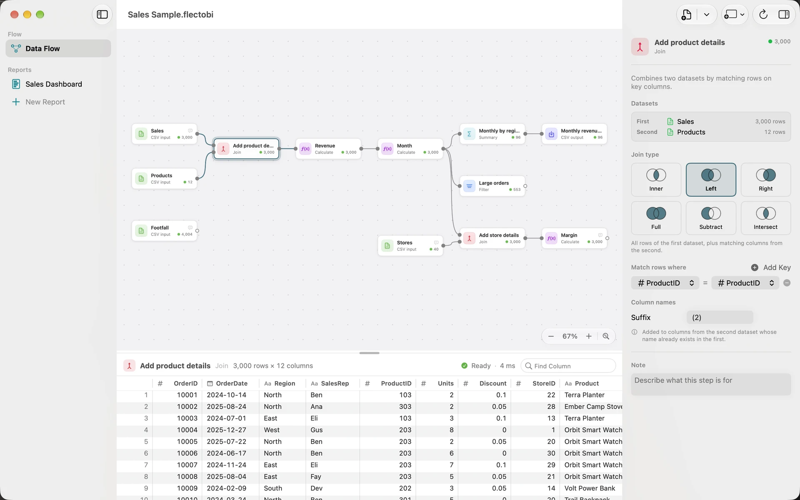
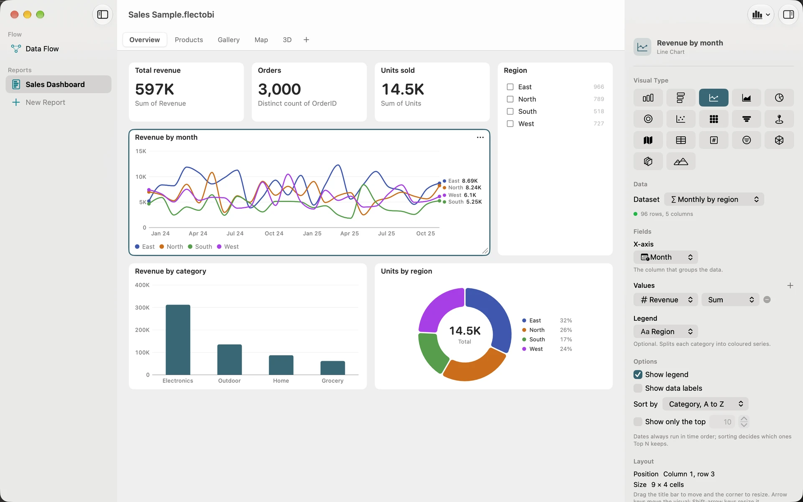

Explore the Sales Sample
The Sales Sample is a Workbook that comes with FlectoBI. It holds a small shop chain’s orders, products and stores, shaped into a Flow and shown in a Report. In about ten minutes you can see how a file becomes a chart, and how a click in one chart changes the others.
Goal: understand how a Flow feeds a Report, and use a Selection to filter a Page.
What you need: FlectoBI on a Mac with macOS 26 or later. No files of your own. The sample reads without any permission prompt.
Open the sample
- Choose Help, then Open Sample Workbook. On a new, empty Flow you can also click or open the Sample Workbook.
- A window called Sales Sample opens. FlectoBI copies the sample files into its own Documents folder first, so you cannot damage anything.
The window has three areas. The sidebar on the left lists the Data Flow and the Reports. The workspace is in the middle. The inspector on the right shows the options of whatever is selected. If the inspector is hidden, press Option-Command-I.
Follow the data through the Flow
Click Data Flow in the sidebar. The Flow is a canvas of Steps joined by lines called Connections. Data moves from left to right.
- Click Zoom to Fit if the whole Flow is not in view.
- Click the Input called Sales. Below the canvas, the preview grid shows its Dataset: 3,000 orders with Columns such as OrderID, OrderDate, Region and Units. The header bar above the grid shows the row and Column counts and the status, Ready.
- In the inspector, look at the Source section. It names the CSV file and offers Change File… and Show in Finder. FlectoBI only reads this file. It never writes over it.
- Click Products, Stores and Footfall in turn. Each is another CSV file.

Now click along the Flow from the Inputs to the right. The clip shows the idea: the preview and the inspector change with each Step.
The Join
Select Add product details. This is a Join Step. It matches each order to a product by the ProductID Column, so every row gains a product name, a category and a price. The Join type is Left, which keeps every order even when no product matches.

The Formulas
Select Revenue. It is a Calculate Step, which adds a Column worked out with a Formula. The Formula is:
round([Units] * [UnitPrice] * (1 - [Discount]), 2)
Square brackets name a Column. Units times price, less the discount, rounded to two decimals. Look at the preview: the new Revenue Column is the last one.

Then select Month. It uses date_trunc('month', [OrderDate]) to turn each date into the first day of its month.
Summary and Output
Select Monthly by region. A Summary Step groups rows and totals them. Here it groups by month and region and adds up Revenue and Units. The last Step, Monthly revenue CSV, is an Output. It can write the result to a file, but only when you ask it to.
Open the Report
Reports read only the output of Steps. Click Sales Dashboard under Reports in the sidebar. Its Pages are tabs along the top. Open Overview.

Each Visual is bound to one Dataset, a Step’s output. Click the line chart. The inspector shows its Field Wells: the X-axis holds the month, the Values hold the sum of Revenue.

Cross-filter the Page
A Selection is a set of Values you choose. It filters every other Visual on the Page that has a Column of the same name.
- In the Region slicer, tick North. The cards, the line, the columns and the donut all change to show North only. A chip at the top of the Page reads “Region: North”.
- Click one column in the column chart, such as Electronics. The cards, the slicer counts and the donut filter to that category too, and the other columns dim. The line chart does not change, because its Dataset has no Category Column.
- Press Esc, or click the chip, to clear the Selection.

Command-click adds a second Value to a Selection. Clicking a single selected mark again clears it.
What you learned
- A Flow is a chain of Steps: Inputs, Transforms and Outputs. You can see the data at every Step. See The Flow canvas.
- A Formula is written like a spreadsheet formula, with Columns in square brackets. See Formulas.
- A Report shows Step outputs on Pages, and a Selection cross-filters the Visuals of a Page. See Reports and Pages.
Next, build your own: Build a monthly sales dashboard.